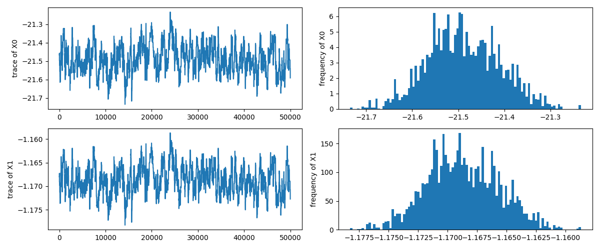
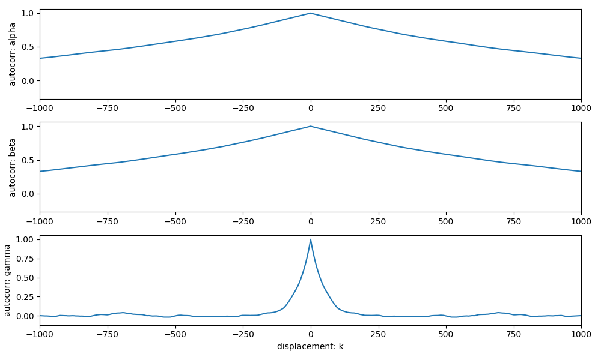

演習問題: 整数データの回帰
ここでは大きさや明るさなどの連続的な量ではなく, 個数などの離散的な量に対する回帰問題を考えます. 数が大きい場合には近似的に正規分布などの連続的な確率分布で近似することができますが, 数が少ない場合には整数値であることを正しくモデル化する必要があります. 整数値を扱う方法のひとつとして, 整数値に対する確率分布 (Poisson 分布, 二項分布など) のパラメタに対して回帰するという手法を説明します.
データ
ここでは Harris et al. (2013) がまとめたカタログから銀河の \(K\)-バンド等級 (\(M_K\)) と銀河に属する球状星団の個数の関係を調べます.
演習用に整形したデータを以下からダウンロードしてください.
| ファイル名 | 形式 |
|---|---|
| exercise_count_model_regression.csv | csv |
データテーブルには以下のカラムが含まれています.
| カラム名 | 説明 |
|---|---|
| galaxy | 銀河名/カタログ ID1 |
| ra | 赤経座標 (J2000)1 |
| dec | 赤緯座標 (J2000)1 |
| M_K | 銀河の \(K\)-バンド等級 \(M_K\) |
| M_K_err | 銀河の \(K\)-バンド等級の不定性 \(\varepsilon_K\) |
| N_gc | 球状星団の個数 \(N_\mathrm{GC}\) |
| N_gc_err | 球状星団の個数の不定性 \(\varepsilon_\mathrm{GC}\) |
| logM_T | 球状星団の総質量1 \(\log_{10}{M_T}\) (\({M_\odot}\)) |
| logM_T_err | 球状星団の総質量の不定性1 \(\varepsilon_M\) |
まずはデータの関係を図示します.
import numpy as np
import pandas as pd
import matplotlib.pyplot as plt
table = pd.read_csv('./exercise_count_model_regression.csv')
print(table)
fig = plt.figure(figsize=(8,6))
ax = fig.add_subplot()
ax.errorbar(
x = table.M_K, y = table.N_gc,
xerr = table.M_K_err, yerr = table.N_gc_err, fmt='.')
ax.set_xlabel('K-band magnitude: $M_K$')
ax.set_ylabel('Number of Globular Clusters')
ax.set_xlim([-19.5,-27.5])
ax.set_ylim([1,5e4])
ax.set_yscale('log')
fig.tight_layout()
plt.show()
計算結果
galaxy ra dec M_K M_K_err N_gc N_gc_err M_T M_T_err
0 NGC205 0.672805 41.685379 -18.947 0.110 11.0 3.0 6.26 0.10
1 NGC221 0.711607 40.865165 -19.327 0.101 0.0 1.0 6.26 0.10
2 NGC224 0.712316 41.268883 -23.467 0.101 450.0 100.0 8.14 0.09
3 NGC253 0.792531 -25.288442 -23.979 0.101 90.0 40.0 7.39 0.16
4 NGC541 1.428978 -1.379491 -25.041 0.105 1620.0 450.0 8.73 0.11
.. ... ... ... ... ... ... ... ... ...
58 NGC7332 22.623476 23.798260 -23.811 0.101 175.0 15.0 7.67 0.04
59 IC1459 22.952945 -36.462176 -25.530 0.103 2100.0 730.0 8.82 0.13
60 NGC7457 23.016647 30.144889 -22.436 0.103 160.0 50.0 7.56 0.12
61 NGC7626 23.345144 8.217056 -25.374 0.102 2833.0 300.0 8.98 0.04
62 NGC7768 23.849610 27.147336 -25.927 0.104 3000.0 1300.0 9.04 0.16
[63 rows x 9 columns]
Poisson 分布による回帰
整数値を扱う確率分布としては Poisson 分布があります. Poisson 分布は 1 つのパラメタ \(\lambda\) を持ちます. \(\lambda\) は事象が発生するレート (確率) に相当します.
\(\Gamma(x)\) は Gamma 関数です. \(\lambda\) は正の実数なので, ここでは \(\log\lambda\) が銀河の K-バンド等級 \(M_K\) によって線形回帰によって近似できるというモデルを考えます.
このモデルに基づいて尤度関数を作成すると以下のようになります.
この尤度関数を用いてパラメタ \(\alpha\), \(\beta\) の分布を導出してください.1
Example
import numpy as np
import scipy.special as sp
import pandas as pd
import matplotlib.pyplot as plt
from mhmcmc import MHMCMCSampler, GaussianStep
table = pd.read_csv('./exercise_count_model_regression.csv')
def log_likelihood(x):
p = np.exp(x[0] + x[1]*table.M_K)
return np.sum((table.N_gc)*np.log(p)-sp.gammaln(table.N_gc+1)-p)
step = GaussianStep(np.array([0.05, 0.002]))
model = MHMCMCSampler(log_likelihood, step)
x0 = np.array([-21.5, -1.2])
model.initialize(x0)
sample = model.generate(51000)
sample = sample[1000:]
M = np.linspace(-19.5,-27.5,50)
a,b = sample.mean(axis=0)
p,e = np.exp(a+b*M), np.sqrt(np.exp(a+b*M))
fig = plt.figure(figsize=(8,6))
ax = fig.add_subplot()
ax.fill_between(M, p-3*e, p+3*e, color='gray', alpha=0.05)
ax.fill_between(M, p-e, p+e, color='gray', alpha=0.10)
for _a,_b in sample[::1000,:]:
ax.plot(M, np.exp(_a+_b*M), color='orange', alpha=0.1)
ax.errorbar(
x = table.M_K, y = table.N_gc,
xerr = table.M_K_err, yerr = table.N_gc_err, fmt='.')
ax.plot(M, p)
ax.set_xlabel('K-band magnitude: $M_K$')
ax.set_ylabel('Number of Globular Clusters')
ax.set_xlim([-19.5,-27.5])
ax.set_ylim([1,5e4])
ax.set_yscale('log')
fig.tight_layout()
plt.show()
print(f'MCMC inference: alpha={a:.3f}, beta={b:.3f}')
計算結果
MCMC inference: alpha=-21.489, beta=-1.169
上記のサンプルで出力したトレースと自己相関関数を示します.


負の二項分布による回帰
負の二項分布とは確率 \(p\) で事象が発生する過程 (Bernoulli 過程) を繰り返したときに \(r\) 回成功するまでに失敗する回数 \(k\) の分布を表した確率分布です. 負の二項分布は 2 つのパラメタを持ちます.2
期待値は \(m = r(1-p)p^{-1}\) で与えられるため, 確率 \(p\) を
と与えることによって期待値が \(m\) である負の二項分布を得ることができます. 以下に期待値が 20 である Poisson 分布と \(r\) を変化させた負の二項分布を示しました. 平均値が一定になるように \(p\) を与えた場合, 負の二項分布は \(r \to \infty\) の極限で Poisson 分布に収束することが分かります.3
ここでは Poisson 分布によるモデルと同じく平均値 \(m\) の対数が銀河の K-バンド等級 \(M_K\) によって線形回帰によって近似できるというモデルを考えます. また \(r\) は正の実数なので \(r = \mathrm{e}^\gamma\) によって与えて正であることを保証します.
このモデルに基づいて尤度関数を作成します.
この尤度関数を用いてパラメタ \(\alpha\), \(\beta\), \(r\) の分布を導出してください.
計算結果
MCMC inference: alpha=-19.840, beta=-1.100, gamma=0.381
上記のサンプルで出力したトレースと自己相関関数を示します. 
-
この例題はかなり収束が遅い問題でした. 得られた \(\alpha\), \(\beta\) の分布を 2 次元の散布図に描くと強く相関していることが分かります. 掃かなければいけない空間はそこそこ広いのですが, ステップを大きくすると確率の低いところへすぐはみ出してしまうので歩幅を狭くせざるを得ません. 効率的にサンプリングするためには工夫が必要かもしれません. ↩↩↩↩↩↩
-
先頭の二項係数が \({-r \choose k}\) と等しいためにこのように呼ばれます. 文献によって \(p\) が成功確率だったり失敗確率だったりするので気をつけてください. ↩
-
このため \(r\) は dispersion parameter とも呼ばれることもあります. ↩